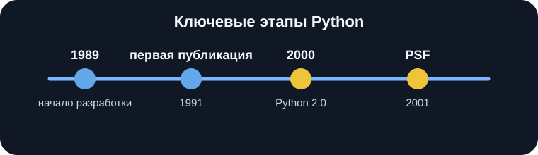
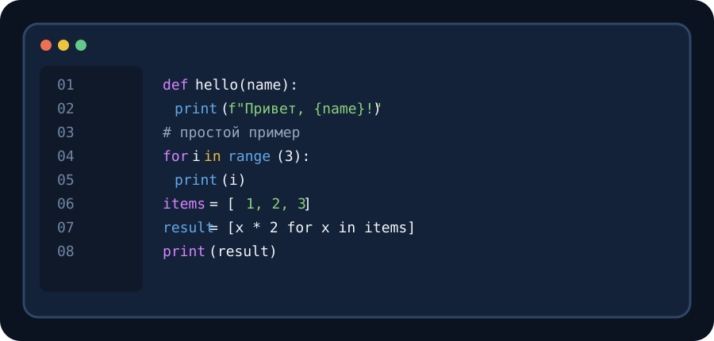

1. История создания Python
Python начал разрабатываться в конце 1980-х - начале 1990-х годов Гвидо ван Россумом в нидерландском институте CWI. Официальная документация Python указывает, что язык создавался как преемник ABC.
Первый публичный выпуск Python относится к . Уже в ранней версии присутствовали классы, обработка исключений, функции и основные встроенные типы данных. Название языка связано не с пресмыкающимся: Гвидо ван Россум был поклонником британского комедийного шоу Monty Python’s Flying Circus.
В 1995 году разработка продолжилась в CNRI. В 2000 году появилась ветка Python 2.0, а в 2001 году была создана Python Software Foundation (PSF), организация, поддерживающая развитие экосистемы языка.
Главная идея: Python создавался с акцентом на читаемость исходного кода и возможность быстро решать практические задачи. Это хорошо видно по синтаксису с отступами и большому набору стандартных средств.

Ключевые этапы
- - начало разработки языка в CWI.
- - первая публичная публикация Python.
- - продолжение работы над языком в CNRI.
- - выпуск Python 2.0.
- - создание Python Software Foundation.
PEP - документ, используемый для предложений по развитию Python. Подробнее о происхождении и лицензии можно узнать в странице Python.org с историей Python, а русскоязычную справочную статью можно открыть в Википедии.
2. Краткий обзор языка
Python - высокоуровневый интерпретируемый язык общего назначения. Официальный учебник отмечает его читаемый синтаксис, динамическую типизацию, развитые структуры данных и удобство для скриптов и быстрой разработки.
Синтаксис
Важная особенность Python - отступы используются для обозначения блоков кода.
Модули
Программу можно разделять на модули и использовать большую стандартную библиотеку.
Платформы
Интерпретатор доступен для основных настольных операционных систем.

Основные характеристики
| Характеристика | Описание | Практическое значение |
|---|---|---|
| Уровень абстракции | Высокоуровневый язык. | Позволяет сосредоточиться на логике задачи. |
| Типизация | Динамическая. | Тип переменной определяется во время выполнения программы. |
| Выполнение | Используется интерпретатор. | Удобно быстро запускать и проверять небольшие программы. |
| Парадигмы | Поддерживаются объектно-ориентированный и другие подходы. | Язык подходит для разных типов задач. |
| Библиотеки | Есть развитая стандартная библиотека и сторонние пакеты. | Можно расширять возможности языка готовыми модулями. |
Где применяется Python
- автоматизация рутинных задач и обработка файлов;
- разработка веб-приложений и серверной логики;
- анализ данных и научные вычисления;
- тестирование, прототипирование и разработка инструментов.
Что делает язык удобным
- читаемый синтаксис и относительно компактный код;
- большое количество готовых стандартных модулей;
- возможность экспериментировать с кодом в интерактивном режиме.
Дополнительный факт о названии Python
Название языка связано с названием комедийного шоу Monty Python’s Flying Circus, которое нравилось его создателю.
3. Примеры кода
Ниже приведены небольшие примеры. Цвета выделяют ключевые слова, функции, строки, числа и комментарии по аналогии с темами современных сред разработки.
name = input("Как тебя зовут? ")
print(f"Привет, {name}!")def square(number):
# Возвращаем квадрат числа
return number * number
result = square(7)
print(result)numbers = [1, 2, 3, 4]
squares = [number ** 2 for number in numbers]
print(squares)В этих примерах показаны ввод и вывод данных, функция с параметром и возвратом значения, а также генерация нового списка из существующего. Синтаксис соответствует базовым конструкциям Python.
Перейти к разделу Python.org для начинающих · К разделу «История»
4. Источники
- Python.org - история Python
- Python.org - начало работы с Python
- Википедия - Python
- normalize.css v8.0.1 - официальный репозиторий
Иллюстрации сохранены в локальной папке проекта.
5. Использованные HTML-теги и CSS-свойства
HTML-теги
CSS-свойства
- align-items
- background
- border
- border-bottom
- border-collapse
- border-left
- border-radius
- border-top
- box-sizing
- caption-side
- clear
- color
- cursor
- display
- flex-direction
- flex-wrap
- float
- font-display
- font-family
- font-size
- font-style
- font-weight
- gap
- grid-template-columns
- height
- justify-content
- letter-spacing
- line-height
- list-style
- list-style-image
- margin
- margin-bottom
- margin-top
- max-width
- min-width
- overflow
- overflow-x
- padding
- padding-bottom
- padding-left
- padding-top
- scroll-behavior
- scroll-margin-top
- shape-outside
- tab-size
- text-align
- text-decoration
- text-transform
- text-underline-offset
- vertical-align
- white-space
- width